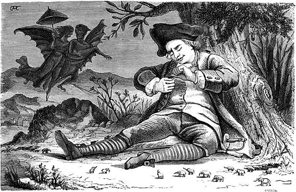

There is this tendency to feel that working methods have to be "optimized". People sending social signals about how hard they work are all around. You can ignore them.
The young Benjamin Franklin carted papers through town every day to make sure that everyone knew what an industrious individual he was. This is the image we normally associate with Franklin. However, decades later, as a leading diplomat in France, John Adams noted of the backwood sage—
The life of Dr. Franklin was a scene of continual dissipation...It was late when he breakfasted, and as soon as breakfast was over, a crowd of carriages came to his levee...the greater part were women and children, come to have the honor to see the great Franklin, and to have the pleasure of telling stories about his simplicity, his bald head...
Notice the parallels in David Foster Wallace's description of Roger Federer's tennis game:
He is never hurried or off-balance. The approaching ball hangs, for him, a split-second longer than it ought to. His movements are lithe rather than athletic. Like Ali, Jordan, Maradona, and Gretzky, he seems both less and more substantial than the men he faces. Particularly in the all-white that Wimbledon enjoys getting away with still requiring, he looks like what he may well (I think) be: a creature whose body is both flesh and, somehow, light.
Of course, this ease of movement is only earned through steady discipline and practice. The calm required to move at a measured pace flows from a solid mental and spiritual foundation. It demands the utmost skill and precision. This is the point: don't confuse the anxiety and display of perfecting a set of techniques to "Get Things Done" with actually getting things done. You've arrived once the work looks easy.
